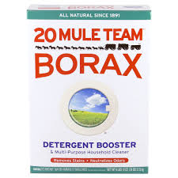
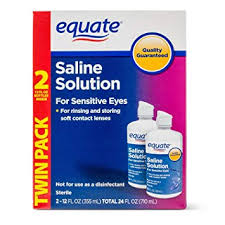
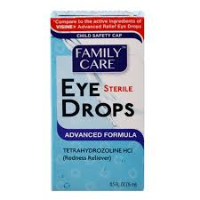
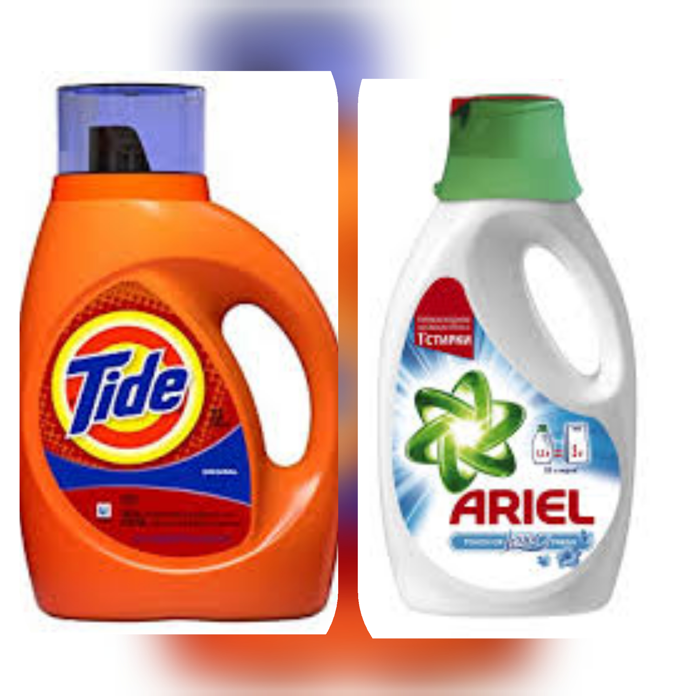
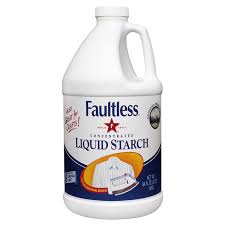

Slime Activator
In this section, we will tell you all and how to make slime activators or in short, slime act. There many slime acts with different sources. And some slimes has specific slime act to use to make that slime successful.
Borax Solution

Borax power is the most widely known of the slime activators and contains borax or sodium tetraborate and has the most controversy surrounding it.
Saline Solution

This is our number one favorite on the slime activator list because it makes an awesome stretchy slime. It’s also more easily available for UK and Canada residents. Note, your saline solution must contain sodium borate and boric acid (borates).
Contact Lens Solution and Baking Soda

In this type of slime act, mostly contact solution is added with the glue mixture then after the slime is ready
for a slime act, baking soda is added to activatethe slime. Contact lens solution and baking soda is just like
a saline solution but in a different materials.
Eye Drop or Eye Wash

Eye drops or eye wash can be a slime activator because the main ingredient you will find in this slime activator is boric acid. Boric acid is generally not found in a cleaning supply type of product as it is a preservative. It is specific to drops you put in your eyes as opposed to rinsing lenses. Because eye drops do not contain sodium borate, you will need to at least double the amount you would use for our saline solution slime recipe.
Laundry Detergent

Liquid detergent is the most common slime act in the Philippines and it is easy to obtain liquid detergent! It contains sodiom tetraborate. Not all liquid detergents works for slime act. Ariel and Tide are the most common slime act as a liquid detergent.
Liquid Starch

Liquid starch was one of the first slime activators that we ever tried! It also makes an awesome, quick, 3 ingredient slime. There are fewer steps for this recipe making it ideal for younger kids as well. You can not make your own homemade liquid starch or use spray starch. Cornstarch is not the same as liquid starch. Some slime recipes use a laundry detergent like Tide.
Buy Online Slime Act
If you have difficulties on finding these slime acts, you can buy a slime act online! Follow that link above the description.